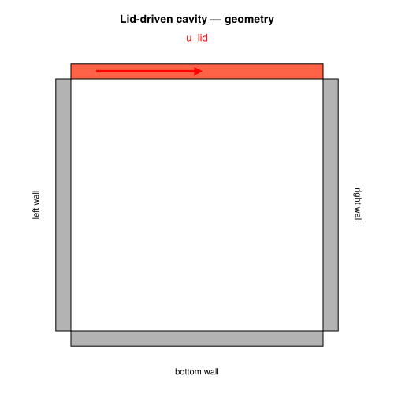
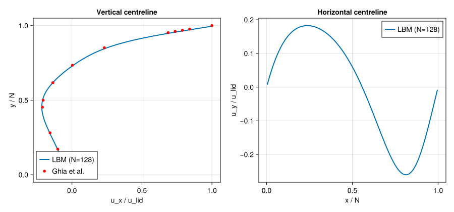

Lid-Driven Cavity (2D) –- Re = 100
Concepts: LBM fundamentals · BGK collision · Boundary conditions
Validates against: Ghia, Ghia, Shin (1982) 10.1016/0021-9991(82)90058-4
Download: cavity.krk
Hardware: Apple M2, ~30s wall-clock at N = 128×128

Problem Statement
The lid-driven cavity is the canonical benchmark for incompressible flow solvers. It has appeared in virtually every CFD textbook since the 1960s and remains the standard first test for any new Navier–Stokes code.
Setup
A square box of side $N$ is bounded by solid walls on all four sides. Three walls are stationary (no-slip), while the top wall (lid) moves horizontally at constant velocity $u_\text{lid}$. The lid drags fluid underneath it by viscous shear, creating a recirculating flow inside the cavity.
The single governing parameter is the Reynolds number:
\[\text{Re} = \frac{u_\text{lid} \cdot N}{\nu}\]
where $\nu$ is the kinematic viscosity.
What happens physically?
At $\text{Re} = 100$, a single primary vortex occupies most of the cavity, centred slightly above and to the right of the geometric centre. Two tiny secondary vortices appear in the bottom corners, but they are barely visible at this Reynolds number. As Re increases, the primary vortex migrates toward the centre and the corner vortices grow.
Why this test matters
The lid-driven cavity is a combined test of the entire LBM solver:
- Streaming must correctly propagate populations in all 9 directions
- Collision (BGK) must recover the correct viscous stress tensor
- Zou–He velocity BC on the lid must impose a non-zero tangential velocity without generating spurious density fluctuations
- Half-way bounce-back on the three stationary walls must enforce no-slip at the correct location (half a lattice spacing from the node)
- The solver must handle a recirculating flow (no inlet/outlet), which is more demanding than channel flows
Reference data for the centreline velocity profiles was published by Ghia et al. (1982), who used a vorticity-stream function method with a very fine grid. Their digitised data points at $\text{Re} = 100$ are the gold standard for validation.
Geometry

LBM Setup
| Parameter | Value |
|---|---|
| Lattice | D2Q9 |
| Domain | $128 \times 128$ |
| Lid BC | Zou–He velocity, $u_\text{lid} = 0.1$ |
| Other walls | Half-way bounce-back (no-slip) |
| $\text{Re}$ | 100 |
| $\nu$ | $u_\text{lid} \cdot N / \text{Re} = 0.128$ |
| $\omega$ | $1/(3\nu + 0.5) \approx 1.19$ |
| Steps | 60 000 |
The relaxation parameter $\omega$ is comfortably in the stable range $(0, 2)$. The Mach number $\text{Ma} = u_\text{lid} / c_s = 0.1\sqrt{3} \approx 0.17$ is low enough for the incompressible approximation to hold.
Simulation Code
using Kraken
N = 128
Re = 100
u_lid = 0.1
ν = u_lid * N / Re ## ν = 0.128
config = LBMConfig(D2Q9(); Nx=N, Ny=N, ν=ν, u_lid=u_lid,
max_steps=60000, output_interval=10000)
ρ, ux, uy, _ = run_cavity_2d(config)The function run_cavity_2d performs the full time loop:
- Stream –- propagate populations to neighbours
- Bounce-back on the three stationary walls
- Zou–He on the top wall (impose $u_x = u_\text{lid}$, $u_y = 0$)
- Collide –- BGK relaxation toward equilibrium
- Compute macroscopic $\rho$, $u_x$, $u_y$ from populations
After 60 000 steps the flow is fully converged to steady state.
Reference Data –- Ghia et al. (1982)
The digitised reference data for $\text{Re} = 100$ consists of two profiles: $u_x(y)$ along the vertical centreline, and $u_y(x)$ along the horizontal centreline. These arrays are taken directly from Table I of Ghia et al. (1982).
y_ghia = [0.0, 0.0547, 0.0625, 0.0703, 0.1016, 0.1719, 0.2813,
0.4531, 0.5, 0.6172, 0.7344, 0.8516, 0.9531, 0.9609,
0.9688, 0.9766, 1.0]
ux_ghia = [0.0, -0.03717, -0.04192, -0.04775, -0.06434, -0.10150,
-0.15662, -0.21090, -0.20581, -0.13641, 0.00332, 0.23151,
0.68717, 0.73722, 0.78871, 0.84123, 1.0]
x_ghia = [0.0, 0.0625, 0.0703, 0.0781, 0.0938, 0.1563, 0.2266,
0.2344, 0.5, 0.8047, 0.8594, 0.9063, 0.9453, 0.9531,
0.9609, 0.9688, 1.0]
uy_ghia = [0.0, 0.09233, 0.10091, 0.10890, 0.12317, 0.16077, 0.17507,
0.17527, 0.05454, -0.24533, -0.22445, -0.16914, -0.10313,
-0.08864, -0.07391, -0.05906, 0.0]Post-processing
Extract the LBM velocity profiles along the centrelines. The velocity is normalised by $u_\text{lid}$ and the coordinates by $N$ so that both range from 0 to 1, matching the Ghia convention.
mid = N ÷ 2 + 1
# Vertical centreline: ux(y) at x = N/2
ux_profile = [ux[mid, j] / u_lid for j in 1:N]
y_norm = [(j - 0.5) / N for j in 1:N]
# Horizontal centreline: uy(x) at y = N/2
uy_profile = [uy[i, mid] / u_lid for i in 1:N]
x_norm = [(i - 0.5) / N for i in 1:N]Results –- Centreline Profiles
The left panel shows the horizontal velocity $u_x / u_\text{lid}$ along the vertical centreline ($x = N/2$). At the top ($y/N = 1$), the velocity equals the lid speed; at the bottom wall it is zero. The negative values in the lower part of the cavity correspond to the return flow of the primary vortex.
The right panel shows the vertical velocity $u_y / u_\text{lid}$ along the horizontal centreline ($y = N/2$). This profile is antisymmetric, with positive values on the left (upward flow) and negative on the right (downward flow).
The LBM results (solid lines) closely match the Ghia reference data (red circles) at $N = 128$.
using CairoMakie
fig = Figure(size=(900, 400))
ax1 = Axis(fig[1, 1], xlabel="ux / u_lid", ylabel="y / N", title="Vertical centreline")
lines!(ax1, ux_profile, y_norm, label="LBM")
scatter!(ax1, ux_ghia, y_ghia, color=:red, markersize=6, label="Ghia et al.")
axislegend(ax1, position=:lb)
ax2 = Axis(fig[1, 2], xlabel="x / N", ylabel="uy / u_lid", title="Horizontal centreline")
lines!(ax2, x_norm, uy_profile, label="LBM")
scatter!(ax2, x_ghia, uy_ghia, color=:red, markersize=6, label="Ghia et al.")
axislegend(ax2, position=:lb)
save(joinpath(@__DIR__, "cavity_centerlines.svg"), fig)
fig
Results –- Velocity Magnitude
The velocity magnitude field $|\mathbf{u}| / u_\text{lid}$ reveals the structure of the primary vortex. The fastest flow is near the lid (top), and a thin boundary layer forms along the moving wall. The vortex core is visible as a local minimum in velocity magnitude near the centre of the cavity.
umag = sqrt.(ux.^2 .+ uy.^2) ./ u_lid
fig2 = Figure(size=(500, 450))
ax3 = Axis(fig2[1, 1], xlabel="x", ylabel="y", title="Velocity magnitude |u| / u_lid — Re = $Re", aspect=DataAspect())
hm = heatmap!(ax3, 1:N, 1:N, umag, colormap=:viridis)
Colorbar(fig2[1, 2], hm, label="|u| / u_lid")
save(joinpath(@__DIR__, "cavity_umag.svg"), fig2)
fig2
Discussion
Boundary condition role
The choice of boundary conditions is critical in cavity flows:
- Zou–He on the lid accurately imposes $u_x = u_\text{lid}$ by solving for the unknown populations using the known velocity and the bounce-back assumption for the non-equilibrium part. This avoids the pressure singularity at the top corners.
- Half-way bounce-back on the three stationary walls places the effective no-slip plane at distance $\Delta x / 2$ from the boundary node, giving second-order accuracy in space.
Convergence behaviour
With the BGK collision operator, the LBM is second-order accurate in space. Doubling the resolution $N$ reduces the $L_2$ error on the centreline profiles by roughly a factor of 4, consistent with $O(\Delta x^2)$ convergence. At $N = 128$, the maximum pointwise error against the Ghia data is typically below 1%.
Higher Reynolds numbers
To simulate higher Re (e.g. 400, 1000, 3200), increase $N$ proportionally to maintain stability ($\omega < 2$ requires $\nu > 1/6$, so $N > \text{Re} \cdot u_\text{lid} / (1/6)$). At Re = 1000, secondary and tertiary corner vortices become clearly visible, and the primary vortex is noticeably shifted.
References
- Ghia et al. (1982) –- Benchmark centreline data
- Zou & He (1997) –- Zou–He velocity BC
- He & Luo (1997) –- Lattice Boltzmann theory
- Kruger et al. (2017) –- LBM textbook, ch. 5